Introducción
La presencia de elementos potencialmente tóxicos como el Cd y el Pb en los suelos representa una proble-mática
prioritaria para la salud pública y el medio ambiente [1] [2]. En Colombia, la
contaminación de los suelos por éstos elementos ha sido previamente advertida y se ha asociado a actividades como la
minería, la agricultura, la extracción de petróleo, el tráfico de maquinaria pesada, entre otras [3] [4] [5]. A pesar de esto, el riesgo potencial al ambiente
y a la salud humana asociado a los procesos de contaminación ha sido poco explorado a lo largo del territorio
nacional. Además, las autoridades competentes carecen de herramientas de gestión ambiental enfocadas en el
diagnóstico, monitoreo y tratamiento de los suelos contaminados [3]. Normalmente se han usado
valores límite de referencia, por ejemplo USEPA, para determinar el nivel de contaminación por metales en los
suelos, sin embargo dichos valores son basados en la concentración pseu-do total de los contaminantes y no en la
concentración disponible, la cual es realmente la fracción que repre-senta un riesgo potencial para los sistemas
biológicos [6]. Sumado a lo anterior, para el establecimiento de los límites recomendables no se
tiene en cuenta la influencia de las propiedades fisicoquímicas de los suelos sobre la dinámica de los
contaminantes, ya que dependiendo de factores como el pH, el contenido de materia orgánica (MO) y la capacidad de
intercambio catiónico de los suelos, influyen en la disponibilidad de los metales, ocasionando un incremento o
disminución del riesgo por contaminación [7]. Bajo este panorama es necesario determinar la
influencia de las propiedades fisicoquímicas de los suelos en la disponibilidad del Cd y el Pb, para establecer unos
valores límites apropiados.
Previos estudios sugieren la implementación de metodologías que permitan estimar los efectos nocivos a la salud
humana y a los ecosistemas en función de las concentraciones disponibles de los contaminantes en los suelos, tales
como los índices de riesgo potencial a la salud humana y riesgo para el ecosistema [1] [8] [9] [10]. De acuerdo al conocimiento que se tiene, en
Colombia la aplicación de estas metodologías es limitada, a pesar de que su uso podría ser un importante instrumento
para el manejo de las áreas contaminadas en el país. De forma paralela al correcto diagnóstico de la contaminación y
sus posibles escenarios de riesgo, es necesario el desarrollo de alternativas que ayuden a disminuir la
disponibilidad de los contaminantes en los suelos. Una de la más recomendada es el uso de enmiendas, las cuales
modifican el ambiente fisicoquímico del suelo y reducen la disponibilidad de metales como el Cd y el Pb [11]. Es importante resaltar que el obje-tivo de los tratamientos de suelo no debe ser disminuir
las concentraciones disponibles sin un objetivo claro, si no llevar estos valores de disponibilidad a rangos en los
cuales la salud de la población y las dinámicas ecosistémicas no estén en riesgo. Por lo tanto, es necesario evaluar
el efecto de las enmiendas remediadoras bajo este punto de vista, aplicando un enfoque de riesgo.
De acuerdo a lo anteriormente mencionado, los principales objetivos del presente estudio son I) determinar las
propiedades fisicoquímicas y la capacidad de adsorción de Cd y Pb para cada uno de los suelos, II) es-timar las
concentraciones pseudo totales y disponibles de Cd y Pb en los suelos, III) evaluar el riesgo para la salud humana y
el ecosistema asociado a la disponibilidad de Cd y Pb, IV) explorar las posibles correla-ciones entre el riesgo a la
salud humana, las propiedades fisicoquímicas de los suelos y la disponibilidad de Cd y Pb y V) determinar el efecto
de la aplicación a suelo de enmiendas inorgánicas y orgánicas sobre la disponibilidad de los contaminantes para el o
los suelos que representen un mayor escenario de riesgo.
Materiales y métodos
Ubicación y recolección de los suelos
Fueron seleccionados cuatro órdenes representativos de suelos, los cuales se distribuyen en aproximadamen-te un 47%
del territorio nacional, equivalente a 54.000 de hectáreas [12]. Uno de los suelos fue
recolectado un el municipio de Amagá, Antioquia (6°2'22.88"N, 75°41'17.20"O) (Orden: Inceptisol), éste fue
selecciona-do por los potenciales impactos asociados a la minería de carbón [13], la cual es una
actividad prioritaria en la economía de la zona. Otro de los suelos fue tomado del municipio La Estrella, Antioquia
(6°05'29.85"N, 75°38'07.09"O) (Orden: Ultisol), este suelo es aledaño a una vía nacional y por lo tanto puede estar
expuesto a la contaminación por el transito constante de tráfico pesado y además por los asentamientos poblacionales
cercanos que dedican a actividades metalmecánicas [5] . En el municipio de Ayapel, Córdoba
(8°11'51.46"N, 74°59'51.79"O) (Orden: Oxisol) fue recolectado un suelo donde previas investigaciones habían
determinado la contaminación por elementos potencialmente tóxicos como Ni, Pb, Cd y Hg, asociado a la actividad de
mi-nería de oro y de ferroníquel [14]. Por último en el municipio de Barrancabermeja, Santander (
6°54'31.39"N, 73°44'9.42"O) (Orden: Inceptisol) se obtuvo un suelo afectado por la industria del petróleo, la cual
es una actividad económica que afecta los suelos en la región noroccidental del país [4] (Figura
1). Para todos los casos, se recolectaron muestras compuestas de suelos empleando una metodología no sistemática en
zigzag, de acuerdo a la Norma Técnica Colombiana 4163-1. Cada muestra compuesta se compuso de un mínimo de 12
submuestras y la profundidad de muestreo fue de 0-20 cm. Las muestras de suelos fueron secadas al aire por 48 h,
molidas, tamizadas (< 2 mm) y almacenadas hasta su uso.
Caracterización de los suelos y determinación de concentraciones pseudo totales y disponibles de Cd y Pb
La caracterización fisicoquímica inicial de los suelos se realizó según las recomendaciones de Muñoz-Ro-mero et al.
[15]. El pH fue medido utilizando un pH-metro (SI Analytics) empleando agua destilada en una
relación suelo: agua de 1:2 (p/v). Para la determinación de la textura se llevó a cabo la metodología de Bouyoucos.
El contenido de materia orgánica (MO) se determinó por el método de pérdida por ignición. La capacidad de
intercambio catiónico se cuantifico por el método de acetato de amonio a pH del suelo y poste-rior suma de las bases
mediante su cuantificación en equipo ICP-OES (Agilent Technologies 5100 ICP-OES) en el Laboratorio de Servicios
Tecnológicos del Centro de los Recursos Naturales Renovables, La Salada, Servicio Nacional de Aprendizaje (SENA).
Para la determinación de las concentraciones pseudo totales de Cd y Pb las muestras de suelo fueron pre-viamente
secadas al horno por 24 h a 105ºC, después pulverizadas y tamizadas. Se empleó digestión ácida (HNO3: HCl 1:3)
asistida por microondas (Ethos One Milestone helping Chemist microwave). Posterior-mente se realizó la separación
del suelo por filtración (0.45 μm) y la respectiva lectura de Cd y Pb usando ICP-OES. La concentración disponible de
Cd y Pb en los suelos se determinó siguiendo la metodología sugerida por Chavez et al. [11].
Previamente se ha
determinado que esta metodología permite cuantificar los metales solubles y fácilmente intercambiables, asociados a
una mayor disponibilidad y potencial interacción con el metabolismo de los sistemas biológicos. Se empleó una
solución de CaCl2 0.01 M como extractante, en una relación 1:2 suelo: extractante. El tiempo de contacto fue de 2 h
y se mantuvo en agitación a 100 rpm. Posteriormente, el suelo fue retirado mediante filtración (0.45 μm) y las
concentraciones de Cd y Pb se deter-minaron por ICP-OES. El porcentaje de disponibilidad fue calculado para Cd y Pb
en todos los suelos como una relación entre las concentraciones pseudo totales y disponibles, como se muestra en la
ecuación (1).
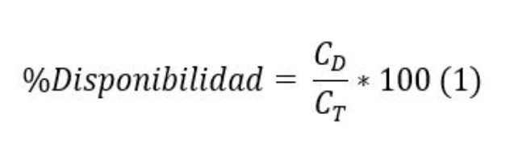
Donde:
CD es la concentración disponible de Cd o Pb (mg/kg)
CT es la concentración pseudo total de Cd o Pb (mg/kg)
Ensayo de adsorción
Para determinar la capacidad de adsorción de Cd y Pb de los diferentes suelos, se empleó un ensayo tipo Batch,
siguiendo las recomendaciones de López et al. [16]. Se realizaron isotermas de adsorción para
cada uno de los suelos en función de diferentes concentraciones de Cd y Pb. Se pesaron 2.0 g de suelo en un tubo
Falcon de 50 ml y posteriormente se agregaron 40 ml de soluciones de Cd o Pb a concentraciones de 0, 5, 10, 20, 40,
80 y 160 mg L-1, preparadas a partir de las sales CdCl2 y Pb(NO3)2 usando una solución de KCl 0.01M. Seguido a esto,
los tubos Falcon se agitaron a 100 rpm durante un tiempo de equilibrio de 24 h. Pos-terior a el tiempo de agitación,
el suelo fue removido mediante filtración (0.45 μm) y la concentración de Cd y Pb en el filtrado fue determinada
mediante ICP-OES, como se explico anteriormente. El ensayo se hizo por duplicado. Posteriormente se construyeron las
isotermas de adsorción determinando la concentración en exceso (qex) empleando la ecuación (2).
Donde:
qex es la cantidad de Cd o de Pb adsorbida (mg / g)
Cinicial es la concentración de Cd o de Pb de las soluciones iniciales (mg /l)
Cequilibrio es la concentración de Cd y de Pb en el filtrado posterior a 24 h de equilibrio (mg/l)
V es el volumen de solución de Cd o de Pb (ml)
M es la masa de suelo empleada (g)
Para determinar la máxima capacidad de adsorción se empleó la ecuación de Langmuir (3) [16].
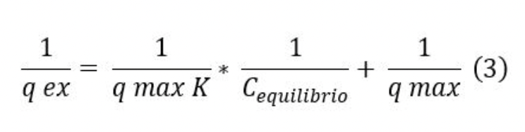
Donde:
q max es la máxima capacidad de adsorción de Cd o Pb en el suelo (mg/g)
K es la constante de Langmuir
Con el fin de obtener los valotres de qmax para cada suelo y contaminante, se realizaron gráficas 1/Cequi-librio &
1/qex y se obtuvieron las ecuaciones de la línea recta. Los valores del intercepto se usaron para calcular qmax (3).
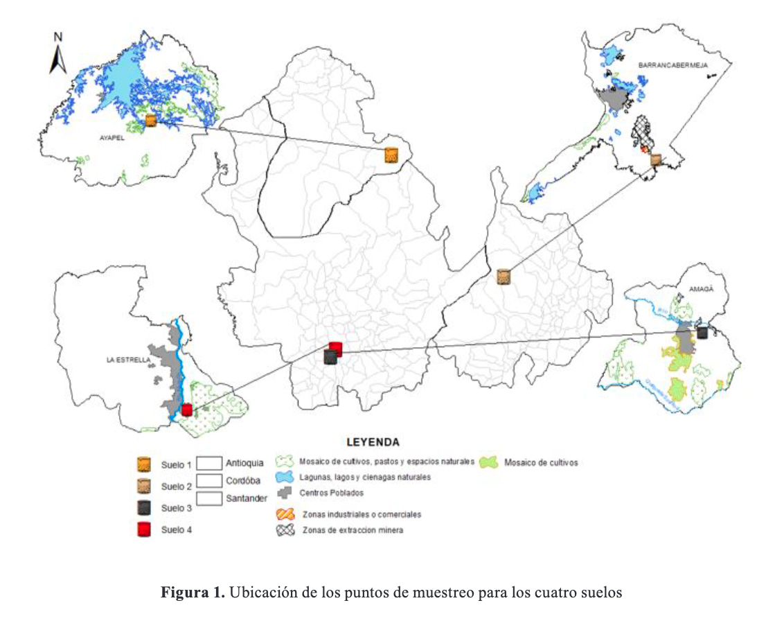
Determinación del riesgo potencial a la salud humana y al ecosistema
Con el fin de determinar riesgo a la salud pública asociado a las diferentes rutas de exposición a los
conta-minantes en suelos para adultos y niños se siguió la metodología de Riesgo Potencial para la Salud Humana [1], usando los valores de referencia (Tabla I) recomendados por la USEPA [10]
y las siguientes ecuaciones:
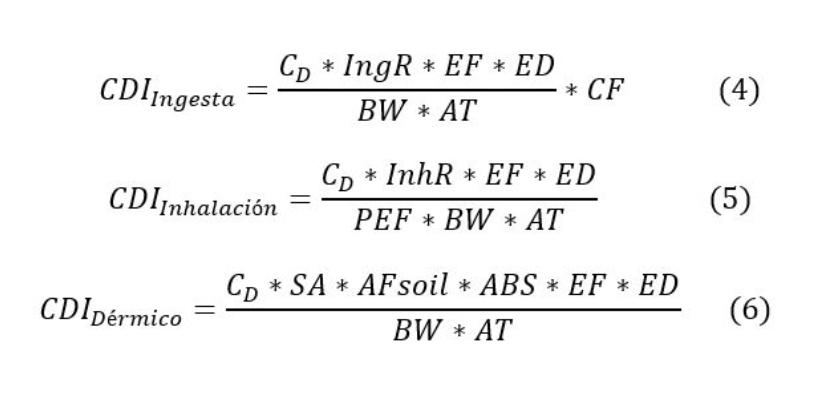
Donde:
CDI es la exposición diaria crónica por ingesta de suelo (mg/kg día)
CDI es la exposición diaria crónica por inhalación de partículas de suelo (inhalación) (mg/kg día)
CDI es la exposición diaria crónica por contacto dérmico con partículas de suelo (mg/kg día)
CD es la concentración disponible de Cd o Pb en el suelo (mg/kg)
IngR es la rata de ingesta del suelo del alimento (mg/día)
EF es la frecuencia de la exposición (días/año)
ED es la duración de la exposición (años)
BW es el peso corporal promedio (kg)
AT es el tiempo promedio de exposición (días)
CF es un factor de conversión entre mg y kg (10-6)
InhR es la rata de inhalación (mg/cm)
PEF es un factor de emisión de partícula (m3/kg)
SA es el área de piel en contacto por evento de exposición (cm2/evento)
ABS es un factor de absorción dérmico
AFsoil es el área superficial de la piel en contacto con el suelo (mg/cm2)
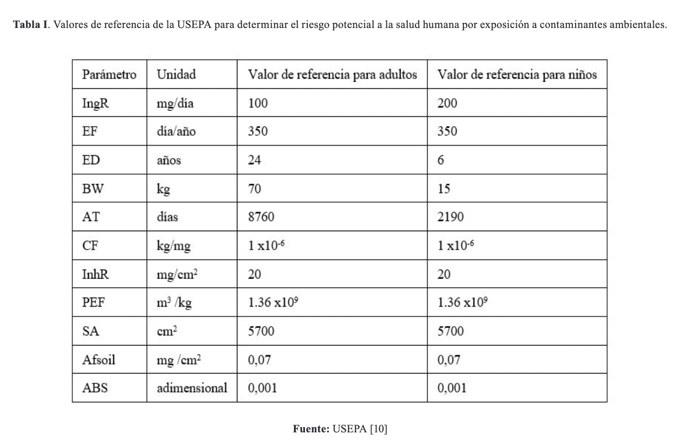
Para establecer el riesgo carcinogénico asociado a la exposición diaria crónica (CDI) a Cd y Pb (4) (5) (6) se
utilizó el factor de riesgo a cáncer para cada metal según la USEPA [10] empleando las ecuaciones (7) y (8). El
factor de riesgo a cáncer usado para el Cd fue de 6.3 y para el Pb de 0.0085 mg/kg día [10]. El valor umbral
aceptable del LCR es de 1 x 10-04 [10].
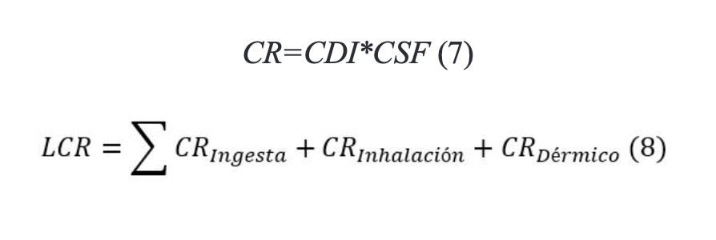
Donde:
CR es el riesgo a cáncer CDI
son los valores de exposición diaria crónica para las diferentes rutas de ingesta, inhalación y dérmica (mg / kg día)
CSF factor de riesgo a cáncer (mg / kg día
LCR riesgo de cáncer a lo largo de la vida
El riesgo no cancerígeno acumulativo se determina con la sumatoria de los cocientes de peligro, indicados en las
ecuaciones (9) y (10) [8]. La valores de Rf D para Cd y Pb usadas fueron 0.001 y 0.0035 mg/kg día,
respectivamente [10] Los valores HI > 1 indican la presencia de riesgo potencial no cancerígeno
para la salud humana, mientras que HI ≤ 1 representa que no hay un riesgo significativo de efectos por efectos no
cancerígenos [8].
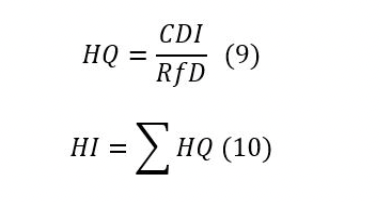
Donde:
HI es el índice de peligro
HQ es el coeficiente de peligro
RfD dosis de referencia (mg/kg día)
El riesgo potencial a los ecosistemas fue determinado mediante el índice Er, este fue calculado de acuerdo a la
ecuación (11) [8]. El índice de riesgo potencial ecológico se interpreta como Er < 40 (bajo
riesgo), 40 < Er < 80 (riesgo moderado), 80 < Er < 160 (riesgo considerable), 160 < Er < 320 (alto riesgo) and
Er> 320 (riesgo muy alto) [9]. El factor de respuesta tóxica empleado para el Cd fue de 30 y
para el Pb fue de 5. Como concentraciones geológicas se emplearon los valores de referencia para Cd y Pb en la
corteza terrestre, los cuales fueron de 0.3 y 17 mg/kg, respectivamente [2].
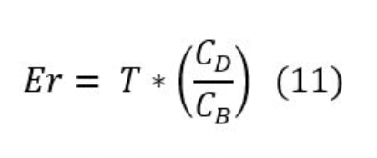
Donde:
Er es el índice de riesgo potencial ecológico para cada metal
T es el factor de respuesta tóxica por metal
CB es la concentración de geológica del metal (mg/kg)
Evaluación de enmiendas para disminuir el riesgo a la salud y al ecosistema en el suelo de Barranca-bermeja
Se seleccionó el suelo del municipio de Barrancabermeja, para determinar el efecto de la aplicación de enmiendas y
poder disminuir la disponibilidad y el riesgo a potencial a la salud humana y al ecosistema, debido a que sus
condiciones fisicoquímicas y concentración disponible de Cd favorecían un mayor escena-rio de riesgo. El ensayo de
incubación se desarrolló a escala de laboratorio en la Universidad de Medellín. El diseño experimental fue factorial
con 3 niveles más un control (sin enmienda). Se evaluó un compost comercial (Cp) como enmienda. Las dosis de
aplicación fueron: 0, 0.5, 1 y 2 %. Se obtuvieron los siguientes tratamientos: Control (0% enmiendas), Cp0.5%
(Compost 0.5%), Cp1% (Compost 1%) y Cp2% (Compost 2%). Los tratamientos se aplicaron por triplicado. Se pesaron 50 g
de suelo previamente secado al aire y tamizados en recipientes cilíndricos plásticos. Posteriormente se incorporó la
enmienda según el respectivo tratamiento. Seguido a esto, se adicionó agua destilada hasta alcanzar un 70% de la
capacidad de retención de agua (CRA). Los recipientes se dejaron en incubación por 140 días, durante este tiempo se
mantuvo la humedad al 70% de la CRA adicionando agua destilada según fuese necesario. Una vez pasado el periodo de
incubación el suelo fue secado al aire por 48 h, molido y tamizado y se usó para determinar la concentración
disponible de Cd y Pb, pH y MO y CIC siguiendo las metodologías indicadas anteriormente.
Análisis estadístico
Los datos fueron analizados empleando el paquete estadístico JMP® Pro versión 13.1.0 (SAS Institute Inc., 2016)
software. Se aplicaron las pruebas de Bartlett y de Shapiro-Wilk para verificar los supuestos de ho-mogeneidad de la
varianza y normalidad de los datos, respectivamente. Se utilizó ANOVA de una vía para determinar la existencia de
diferencias estadísticas significativas (P<0.05). Se empleó el test de Tukey para evaluar las diferencias
estadísticas significativas pares de variables (P<0.05). Para establecer relaciones en-tre variables se usó
estadísticos multivariados mediante el análisis de correlaciones de Pearson.
Resultados y discusión
Concentraciones pseudo totales y disponibles de Cd y Pb en los suelos
Las características fisicoquímicas, concentraciones pseudo totales, disponibles y porcentajes de disponibili-dad
para el Cd y el Pb se muestran en la Tabla II. De acuerdo a los estándares internacionales de la USEPA, todos los
suelos estudiados se consideran contaminados por Cd, ya que sobrepasan el valor límite recomen-dado de 0.43 mg/kg [11]. Los valores encontrados en este estudio están dentro de los rangos promedio de Cd en áreas
contaminadas en Colombia (0.5 - 13.0 mg/kg), comprobando el preocupante estatus de conta-minación por este metal en
el país [3]. En el suelo de Amagá, la concentración pseudo total de Cd fue en promedio tres veces
más elevada en comparación a los demás suelos, lo anterior puede estar relacionado por lo aportes de este
contaminante procedentes de la actividad de minería de carbón [13].Por otra lado, el suelo de La
Estrella supera el valor límite sugerido para el Pb en suelos (90 mg/kg) y puede considerarse con ni-veles de
contaminación elevados [17]. Respecto a los valores promedio nacionales de Pb en sedimentos (2.0
– 102 mg/kg) [3], la concentración pseudo total en el suelo de La Estrella supera el valor máximo
reportado, planteando un enriquecimiento significativo para este metal en el área de estudio. Asimismo, la
concentra-ción pseudo total de Pb fue en promedio cinco veces mayor en el suelo de La Estrella en comparación a los
demás suelos, esto puede explicarse por la contaminación asociada al tráfico pesado de vehículos [5], ya que este suelo limita con una vía de alto flujo vehicular. A partir de los valores de las
concentraciones pseudo totales encontradas en este estudio, se puede concluir que en comparación con las
concentraciones geológi-cas promedio de Cd= 0.03 mg/kg y de Pb= 17 mg/kg [2], todos los suelos
analizados presentan niveles de contaminación por enriquecimiento por Cd y los suelos de Amagá y La Estrella por Pb.
A diferencia de la concentración pseudo total, la cual agrupa el contenido de los contaminantes en la fase sólida y
en la fase líquida del suelo, la concentración disponible se asocia a los contaminantes fácilmente intercambiables y
en forma iónica (ej. Cd2+ y Pb2+) presentes en la solución del suelo [7]. El suelo de Amagá
presentó los valores más bajos de % de disponibilidad, a pesar de tener unos valores elevados de concentra-ciones
pseudo totales para ambos contaminantes (Tabla II). Por otra parte, los % de disponibilidad para Cd y Pb fueron en
promedio tres veces mayores para el suelo de Barrancabermeja en comparación a los demás suelos. Estos resultados
pueden explicarse desde las propiedades fisicoquímicas de los suelos (Tabla II), ya que el suelo de Barrancabermeja
presenta un ambiente químico edáfico (bajos valores de pH, MO y CIC) que favorece la disponibilidad de contaminantes
como los metales en forma catiónica [18]. Por el contrario, los elevados valores de pH, MO y CIC
en el suelo de Amagá, favorecen la inmovilización de contaminantes mediante mecanismos como el intercambio iónico,
la formación de complejos estables con la MO y la copre-cipitación, reduciendo la fracción disponible [7] [18]. Según los resultados de este estudio, la determinación de las
concentraciones pseudo totales de Cd y Pb en los suelos proporcionan información importante sobre los niveles de
contaminación en comparación con los valores de litológicos. Sin embargo, la medición de las concentraciones pseudo
totales pueden no ser capaz de proporcionar información sobre su disponibili-dad. Por lo tanto, la determinación de
la disponibilidad de los contaminantes es una base importante para investigar su migración y transformación y
evaluar sus posibles impactos ambientales, soportando hallazgos similares reportados en previos estudios [19] [6].
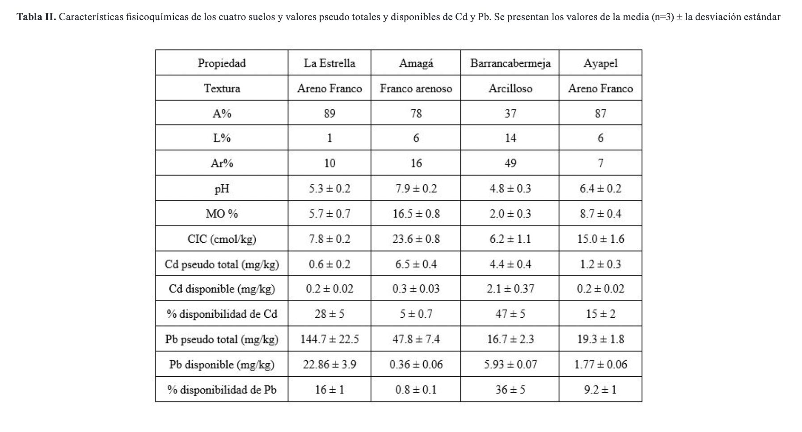
Capacidad de adsorción de Cd y Pb en suelos
Una de las representaciones más comunes de la interacción entre el adsorbente y adsorbato es la isoterma de
adsorción, la cual proporciona información relevante respecto a la afinidad entre ambos [16]. La
Figura 2 muestra las isotermas construidas a partir de los valores de qex para cada uno de los suelos, tanto para Cd
como para Pb y los valores de qmax calculados. Los suelos de La Estrella, Barrancabermeja y Ayapel presentaron
isotermas tipo S para ambos metales, lo cual indica una débil interacción del suelo con los contaminantes a bajas
concentraciones y un incremento en la adsorción a concentraciones elevadas. Por el contrario el suelo de Amagá
mostró una isoterma tipo L tanto para Cd como Pb, que indica una alta afinidad del suelo por ambos metales a bajas
concentraciones [16]. En general se pudo observar una mayor capacidad de adsorción de Pb por
parte de todos los suelos en comparación a la capacidad de adsorción del Cd. La qmax más alta fue encontrada para el
suelo de Amagá, tanto para Cd y Pb, con valores de 3.65 y 17.0 mg/g, respectivamente. El suelo de Barrancabermeja
presentó los valores más bajos de qmax para ambos conta-minantes con valores de 0.027 mg/g para el Cd y 0.33 mg/g
para el Pb. Comparado con el Cd, el Pb presenta una mayor afinidad por los coloides del suelo, tales como la materia
orgánica y los óxidos de Fe y Mn a valores de pH superiores a 4.0, generando una fuerte y estable interacción,
normalmente quimisorción, lo que conlleva a su inmovilización y reducción de su concentración en la solución del
suelo. A diferencia del Cd que normalmente se ubica en la solución del suelo como Cd2+ [18]. Lo
anterior puede explicar el menor porcentaje de disponibilidad de Pb en todos los suelos analizados en este estudio
(Tabla II).
El suelo de Amagá presento la mayor capacidad de adsorción de Cd a concentraciones de equilibrio bajas (0.03-15.24
mg/L). Los suelos de la Estrella y Ayapel presentaron una mayor capacidad de sorción de Cd cuando las
concentraciones en el equilibrio fueron superiores a 50 mg/L. En el caso del suelo de Barran-cabermeja se pudieron
observar los menores valores de adsorción de Cd, incluso cuando la concentración de equilibrio supero los 100 mg/L.
Estos resultados soportan y explican el menor valor de porcentaje de disponibilidad para el Cd encontrado en el
suelo de Amagá (Tabla II). Desde el punto de vista ambiental la adsorción de Cd en suelos a bajas concentraciones es
deseada, ya que por lo general éste se presentan en rangos de 0.8-1.0 mg/kg [2]. Por lo tanto, los
suelos con baja capacidad de adsorción a estos valores de con-centración favorecerán la disponibilidad de dicho
contaminante, generando un mayor riesgo potencial a los ecosistemas y a la salud humana. Para otros suelos
tropicales pertenecientes a los órdenes Oxisol y Entisol se han reportado valores de qmax entre 0.04 – 1.29 mg/g [20], los cuales son similares a los valores de qmax encontrados en este estudio (0.03 – 3.65
mg/g). Lo anterior asociado a una baja interacción entre los coloides del suelo y los contaminantes (cationes) como
el Cd2+, debido a sus reducidos valores de pH, contenidos de MO y CIC, lo que favorece la distribución del
contaminante en la solución del suelo haciéndolo más dispo-nible como se discutió previamente.
Para el Pb, los suelos de La Estrella, Ayapel y Barrancabermeja presentaron una mayor capacidad de ad-sorción en
concentraciones del equilibrio superiores a 20 mg/L. Al igual que con el Cd, el suelo de Amagá mostró la mejor
capacidad de adsorción de Pb a concentraciones de equilibrio entre 0.1 – 0.4 mg/L. Basán-dose en los resultados del
estudio se puede inferir que todos los suelos tienen buena capacidad para retener dicho contaminante y reducir su
disponibilidad, ya que la concentración natural del Pb en suelos se estima en un rango de 44 - 51 mg/kg [2]. Lo anterior, está en línea con los menores porcentajes de disponibilidad de Pb encontrados
en los cuatro suelos, en especial para el suelo de Amagá (Tabla II). Al comparar los va-lores de qmax obtenidos para
el Pb en este estudio (0.5 – 17 mg/g) con los qmax reportados por Marques et al. [21] para otros
suelos tropicales en Suramérica (0.58 – 1.11 mg/g). Se establece que los cuatro suelos estudiados tienen una
considerable capacidad para la inmovilización del Pb, en especial el suelo de Amaga, cuyo valor de qmax es casi 17
veces mayor que el rango reportado para el estudio previamente mencionado. El comportamiento superior para adsorber
Pb en este suelo posiblemente se asocie a los elevados contenidos de MO (Tabla II).
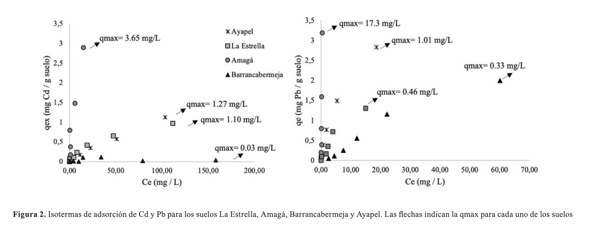
Riesgo a la salud humana y al ecosistema
Los resultados del cálculo de los indicadores de riesgo (LCR, HI y Er) se presentan en la Tabla III. Respecto a la
evaluación del riesgo a la salud humana para niños asociada a la disponibilidad de Cd los valores del LCR en el
suelo de Barrancabermeja fueron los únicos que sobrepasaron el límite recomendado de 1 x 10-4, indicando un
potencial riesgo cancerígeno significativo por la exposición a este contaminante. Para el Pb, ninguno de los suelos
sobrepaso el LCR recomendado. En todos los suelos para ambos contaminantes, los valores de HI asociados a riesgo no
cancerígeno estuvieron por debajo del límite recomendado de 1. En el caso del riesgo al ecosistema (Er), el Cd en el
suelo de Barrancabermeja fue clasificado como de alto riesgo, lo anterior a razón de su disponibilidad y elevada
toxicidad para los sistemas biológicos en general [9]. A pesar de lo anterior, en un escenario futuro el posible
incremento de la disponibilidad del Pb o el Cd por aportes antropogénicos o naturales, así como por cambios en las
propiedades fisicoquímicas del suelo, podrían ocasionar riesgos a la salud pública y al ecosistema por lo tanto se
recomienda el monitoreo de los procesos de contaminación con la finalidad de impedir que los escenarios de riesgo
aumenten. En la Tabla IV se muestran los resultados del análisis de correlaciones de Pearson. Se evidencio una
fuerte (r=0.81 a 0.99) y significativa relación entre los valores de LCR, HI, Er y el porcentaje de disponibilidad
de ambos contaminantes. Por el contrario, los indicadores de riesgo no se relacionaron significativamente con las
con-centraciones pseudo totales. Estos resultados demuestran que la disponibilidad del Cd y el Pb es un mejor
indicador para estimar el riesgo en las áreas contaminadas, en comparación con las concentraciones pseudo totales,
coincidiendo con los hallazgos de Li et al. [6] para suelos impactados por la contaminación de ele-mentos metálicos.
Propiedades fisicoquímicas de los suelos como el pH, MO y CIC se correlacionaron de manera negativa (r= -0.61 a
-0.74) y significativa con el porcentaje de disponibilidad, los qmax de Cd y Pb y con los valores de LCR, HI y Er.
Lo anterior soporta la importancia que tienen las propiedades fisicoquími-cas de los suelos en la predicción y
estimación de la disponibilidad de los contaminantes y con esto el riesgo derivado de dichos procesos. A la luz de
estos resultados, se observa que la capacidad de adsorción de los contaminantes por parte de los suelos, supone una
de los principales fenómenos que regulan la disponibili-dad de éstos en el ambiente. Puede establecerse entonces que
los suelos ácidos, con bajos valores de MO y CIC, propician condiciones para que el riesgo por eventos de
contaminación por metales sea mayor. Según los hallazgos de este estudio, es posible usar parámetros fisicoquímicos
del suelo como posibles predictores de la disponibilidad y del riesgo a la salud humana y al ecosistema, lo que
puede contribuir al desarrollo de valores límites o recomendables para propiedades del suelo y concentraciones de
contaminantes. Así pues, se recomienda la aplicación de índices como el LCR, HI y Er usando para su determinación
las concentra-ciones disponibles y no las pseudo totales.
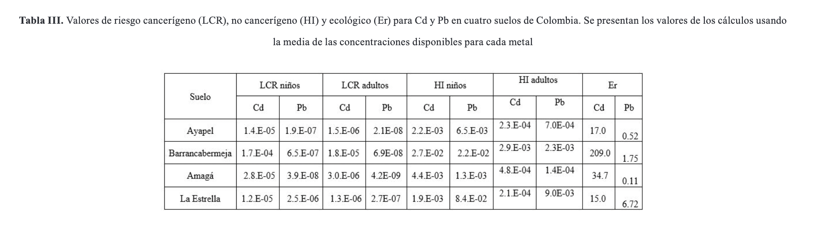
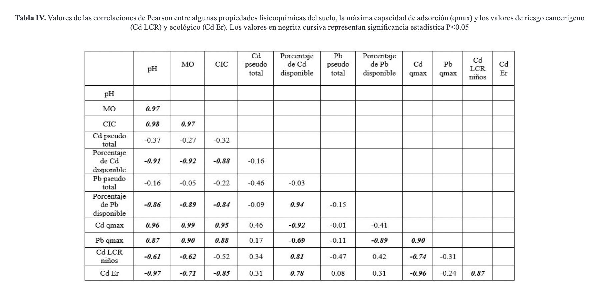
Potencial uso de enmiendas remediadoras
El compost es un material obtenido a partir del proceso de compostaje de residuos, convirtiéndolo en una importante
enmienda para los suelos, la cual puede incrementar el pH, los contenidos de MO y la CIC, ayu-dando a disminuir las
concentraciones disponibles de los contaminantes [22]. Los resultados de este estudio demuestran
que la disponibilidad de Cd se redujo de 23.8% a 58.6% con la aplicación de la enmienda a las diferentes dosis
evaluadas (Tabla V). Resultados similares encontraron Liu et al., [23], reduciendo la
con-centración de Cd disponible hasta en un 59.9%, lo cual se relaciona posiblemente con los incrementos en el pH y
la MO, mejorando la capacidad de adsorción de los metales en el suelo y por consiguiente disminuir su
disponibilidad, como se explico anteriormente. Los porcentajes de disminución de disponibilidad de Cd, también son
respaldados por los valores del LCR para niños, en donde se tiene una mayor efectividad en la disminución del riesgo
carcinogénico por Cd disponible con los tratamientos Cp1% y Cp2%. Sin embargo, el riesgo ecológico para Cd sigue
siendo de riesgo considerable a alto riesgo, pese a la implementación de la enmienda. Por otro lado, la
concentración disponible de Pb en los tratamientos aplicados estuvo por debajo del límite de detección del método (
<0.03 mg/kg), por lo tanto, puede deducirse que el uso de compost como enmienda resultó efectiva para reducir la
disponibilidad de Pb.
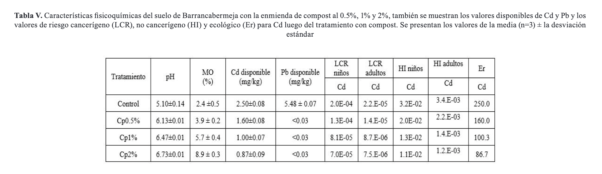
Conclusiones
Los resultados obtenidos en este estudio pueden impulsar a las partes interesadas y a las autoridades com-petentes a
tomar medidas inmediatas enfocadas en una mejor gestión ambiental y del riesgo para suelos contaminados, así como en
la evaluación de los posibles impactos a la salud pública y a los ecosistemas aso-ciados a la presencia de elementos
como el Cd, Pb u otros elementos potencialmente tóxicos. De igual forma se propone el uso de enmiendas como una
buena práctica de manejo para reducir la disponibilidad del Cd y el Pb en suelos con condiciones ácidas y bajos
contenidos de MO y CIC. Las concentraciones disponibles de los elementos potencialmente tóxicos se vieron
influenciadas por las propiedades fisicoquímicas y por la capacidad de adsorción de los suelos, por lo tanto, para
la estimación de los índices para el riesgo poten-cial a la salud por la disponibilidad de dichos elementos, estos
factores toman relevancia para su respectiva estimación. Es importante desarrollar posteriores investigaciones donde
se implementes estudios ecotoxi-cológicos, que ayuden a entender mejor diferentes procesos como la bioacumulación y
biomagnificación de estos contaminantes presentes en los suelos, contribuyendo a una mejor estimación del riesgo
para diferentes sistemas biológicos.
Agradecimientos
Julián E. López y Juan P. Salazar-Giraldo expresan sus agradecimientos a la Universidad de Medellín y al Centro de
los Recursos Naturales Renovables, La Salada, Servicio Nacional de Aprendizaje, SENA, por su apoyo en el desarrollo
de esta investigación. Isabella Castañeda-Restrepo agradece especialmente al Centro de Laboratorios de la
Universidad de Medellín, en especial al área de suelos-ambiental y al grupo de inves-tigación GEMA por el apoyo para
desarrollar su trabajo de grado. Julián E. López agradece especialmente a la Universidad de Medellín por la beca No.
321316/427405.
References
[1] X. Liu et al., “Human health risk assessment of heavy metals in soil–vegetable system: A multi-medium analysis,” Sci. Total Environ., vol. 463–464, pp. 530–540, Oct. 2013, doi: 10.1016/j.scitotenv.2013.06.064.
[2] C. Patinha, A. Armienta, A. Argyraki, and N. Durães, “Inorganic Pollutants in Soils,” in Soil Pollution, Elsevier, 2018, pp. 127–159.
[3] V. A. Arias Espana, A. R. Rodriguez Pinilla, P. Bardos, and R. Naidu, “Contaminated land in Colombia: A critical review of current status and future approach for the management of contaminated sites,” Sci. Total Environ., vol. 618, pp. 199–209, 2018, doi: 10.1016/j.scitotenv.2017.10.245.
[4] J. J. Arrieta-Soto, A., A.L. Chaparro-García, G. Montañez-Acevedo, Bustamante-Cano, “Residuos De Metales Tóxicos En Suelos Agrícolas De Veredas Cercanas A Explotaciones Petroleras En Tibú, Norte De Santander,” Respuestas, vol. 25, no. S1, pp. 19–27, 2020.
[5] J. M. Trujillo-González, M. A. Torres-Mora, R. Jiménez-Ballesta, and J. Zhang, “Land-use-dependent spatial variation and exposure risk of heavy metals in road-deposited sediment in Villavicencio, Colombia,” Environ. Geochem. Health, vol. 41, no. 2, pp. 667–679, Apr. 2019, doi: 10.1007/s10653-018-0160-6.
[6] H. Li and H. Ji, “Chemical speciation, vertical profile and human health risk assessment of heavy metals in soils from coal-mine brownfield, Beijing, China,” J. Geochemical Explor., vol. 183, pp. 22–32, Dec. 2017, doi: 10.1016/j.gexplo.2017.09.012.
[7] D. C. Adriano, Trace {Elements} in {Terrestrial} {Environments}. New York, NY: Springer New York, 2001.
[8] V. Pecina, M. Brtnický, T. Baltazár, D. Juřička, J. Kynický, and M. Vašinová Galiová, “Human health and ecological risk assessment of trace elements in urban soils of 101 cities in China: A meta-analysis,” Chemosphere, vol. 267, p. 129215, Mar. 2021, doi: 10.1016/j.chemosphere.2020.129215.
[9] L. Hakanson, “An ecological risk index for aquatic pollution control.a sedimentological approach,” Water Res., vol. 14, no. 8, pp. 975–1001, Jan. 1980, doi: 10.1016/0043-1354(80)90143-8.
[10] USEPA, Integrated Risk Information System of the US Environmental Protection Agency. 2012.
[11] E. Chavez, Z. L. He, P. J. Stoffella, R. Mylavarapu, Y. Li, and V. C. Baligar, “Evaluation of soil amendments as a remediation alternative for cadmium-contaminated soils under cacao plantations,” Environ. Sci. Pollut. Res., vol. 23, no. 17, pp. 17571–17580, 2016, doi: 10.1007/s11356-016-6931-7.
[12] Instituto Geográfico Agustín Codazzi, Ed., Suelos y tierras de {Colombia}. Bogotá: Instituto Geográfico Agustín Codazzi, 2016.
[13] F. Li, X. Li, L. Hou, and A. Shao, “Impact of the Coal Mining on the Spatial Distribution of Potentially Toxic Metals in Farmland Tillage Soil,” Sci. Rep., vol. 8, no. 1, p. 14925, Dec. 2018, doi: 10.1038/s41598-018-33132-4.
[14] J. Marrugo-Negrete, J. Pinedo-Hernández, and S. Díez, “Assessment of heavy metal pollution, spatial distribution and origin in agricultural soils along the Sinú River Basin, Colombia,” Environ. Res., vol. 154, no. November 2016, pp. 380–388, 2017, doi: 10.1016/j.envres.2017.01.021.
[15] J. H. Muñoz Romero, C. A. Sepúlveda Cadavid, N. Cortés, J. E. López Correa, and J. D. Correa Estrada, “Inactivation of Fusarium oxysporum Conidia in Soil with Gaseous Ozone–Preliminary Studies,” Ozone Sci. Eng., vol. 42, no. 1, pp. 36–42, 2020, doi: 10.1080/01919512.2019.1608810.
[16] J. E. López et al., “Adsorption of Cadmium Using Biochars Produced from Agro-Residues,” J. Phys. Chem. C, vol. 124, no. 27, pp. 14592–14602, Jul. 2020, doi: 10.1021/acs.jpcc.0c02216.
[17] T. Shi et al., “Status of lead accumulation in agricultural soils across China (1979–2016),” Environ. Int., vol. 129, pp. 35–41, Aug. 2019, doi: 10.1016/j.envint.2019.05.025.
[18] B. J. Alloway, Ed., Heavy metals in soils: trace metals and metalloids in soils and their bioavailability, 3rd ed., no. v. 22. Dordrecht, Netherlands ; New York: Springer, 2013.
[19] W. de Vries, P. F. A. M. Römkens, and L. T. C. Bonten, “Spatially Explicit Integrated Risk Assessment of Present Soil Concentrations of Cadmium, Lead, Copper and Zinc in The Netherlands,” Water. Air. Soil Pollut., vol. 191, no. 1–4, pp. 199–215, Jun. 2008, doi: 10.1007/s11270-008-9617-z.
[20] M. Colzato, L. R. F. Alleoni, and M. Y. Kamogawa, “Cadmium sorption and extractability in tropical soils with variable charge,” Environ. Monit. Assess., vol. 190, no. 6, p. 345, Jun. 2018, doi: 10.1007/s10661-018-6666-7.
[21] C. Patinha, M. C. Kasemodel, E. A. Ferreira da Silva, V. G. Rodrigues, and J. P. Marques, “Adsorption of lead (Pb) in strongly weathered tropical soil (Ribeira Valley region - Brazil),” Earth Sci. Res. J., vol. 23, no. 4, pp. 385–395, Oct. 2019, doi: 10.15446/esrj.v23n4.77869.
[22] J. H. Park, D. Lamb, P. Paneerselvam, G. Choppala, N. Bolan, and J.-W. Chung, “Role of organic amendments on enhanced bioremediation of heavy metal(loid) contaminated soils,” J. Hazard. Mater., vol. 185, no. 2–3, pp. 549–574, Jan. 2011, doi: 10.1016/j.jhazmat.2010.09.082.
[23] B. Liu et al., “Remediation effectiveness of vermicompost for a potentially toxic metal-contaminated tropical acidic soil in China,” Ecotoxicol. Environ. Saf., vol. 182, no. June, p. 109394, 2019, doi: 10.1016/j.ecoenv.2019.109394.

 Ingeniera Ambiental, Facultad de Ingeniería, Programa de Ingeniería Ambiental,
isacstdrpo@gmail.com.
Ingeniera Ambiental, Facultad de Ingeniería, Programa de Ingeniería Ambiental,
isacstdrpo@gmail.com.
 ORCID:
0000-0002-9769-2167.
Universidad de Medellín, Medellín, Colombia.
ORCID:
0000-0002-9769-2167.
Universidad de Medellín, Medellín, Colombia.